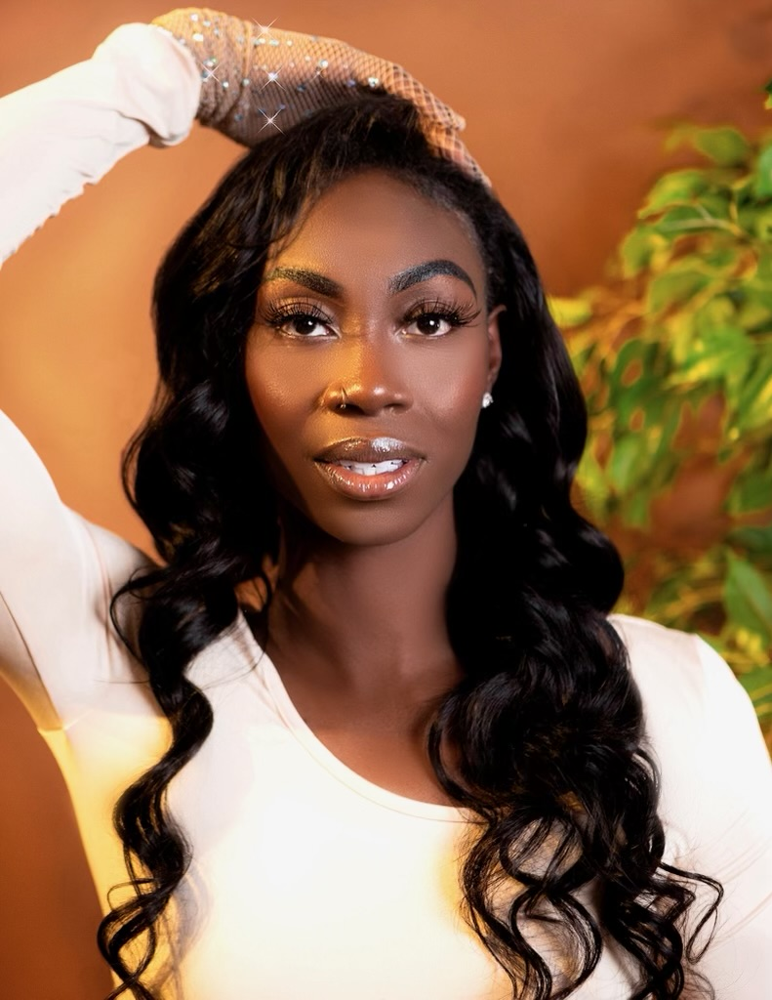

Quick Weave
A quick weave is a type of hairstyle where hair extensions are bonded to a protective cap or directly onto the natural hair using adhesive glue. It is a faster, more affordable alternative to a traditional sew-in weave and allows for a wide range of styles and textures. Quick weaves offer a temporary solution for adding length, volume, or a new look.
Here are some key features of a quick weave:
-
Versatility: Here are some variations of quick weaves that I offer
- Middle part Leave Out: About 2" of hair is left out in the middle of hair to blend with extensions.
- Side Part Leave Out: About 2" of hair is left out in either side of hair to blend with extensions.
- 360 leave out: About 2" of hair is left out around the perimeter of the hair to blend with extensions. This is perfect if you like to wear your hair up in a ponytail, or in a flip over style.
- Veratile: Any combination of the variations listed above. This alllows for increased styling options.
- Half-up-half-down: The hair is split into two sections. The bottom part of the hair is a traditional quick weave, while the top part of the hair is placed into one or two ponytails.
- Quick Installation: Quick weaves take significantly less time to install than traditional sew-ins, usually between 1 to 2 hours, depending on the complexity of the style. This makes it a popular choice for those seeking a fast yet stylish solution.
- Less-Long Lasting: Unlike sew-ins, which can last several weeks, quick weaves are not meant to be worn for extended periods. The adhesive glue can start to weaken, and the style can lose its freshness after a few weeks.
- Easy Removal: Quick weaves are relatively easy to remove. For cap-based weaves, the cap and glued wefts can be gently cut away, while glue-based weaves require careful application of glue.
- Low Maintenance: Once installed, quick weaves are low maintenance, requiring only basic care like gentle combing and occasional styling touch-ups. However, it’s important to avoid excessive moisture, as this can weaken the glue and cause the extensions to loosen. Sew-ins can be customized based on individual preferences, including length, volume, and texture. Extensions can also be dyed to match or enhance the natural hair color.
In summary, a quick weave is a convenient and temporary hairstyle solution that allows for quick transformation with minimal commitment. It’s a cost-effective and versatile option, though it requires careful handling to avoid potential hair damage during installation and removal.